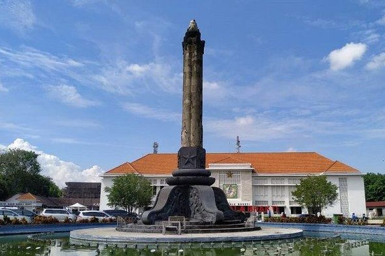
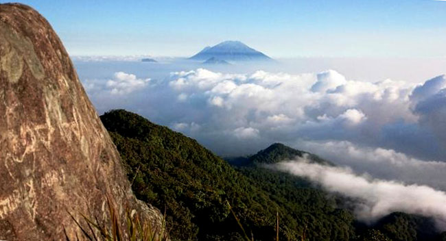
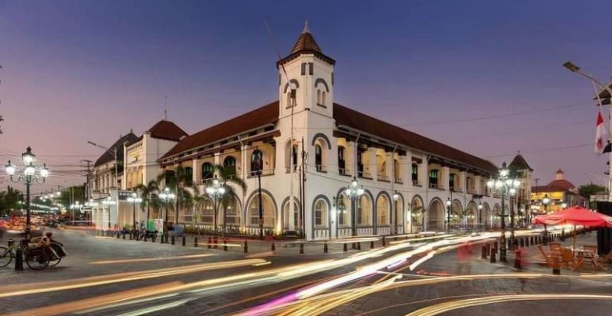
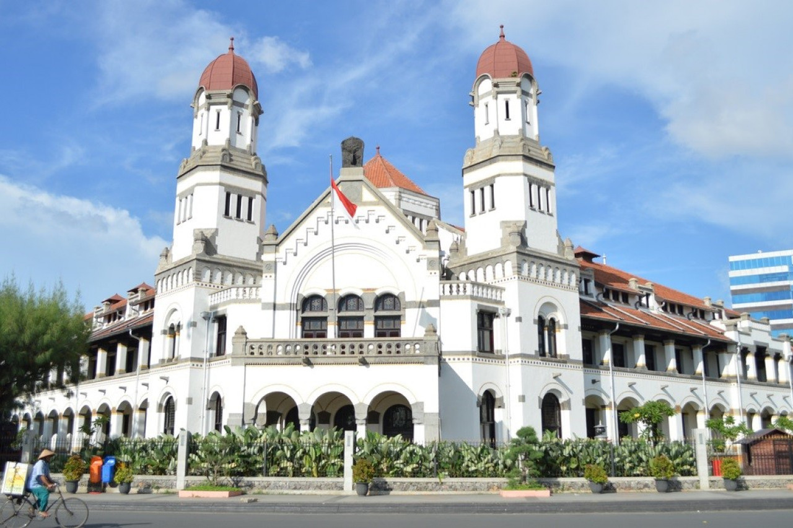
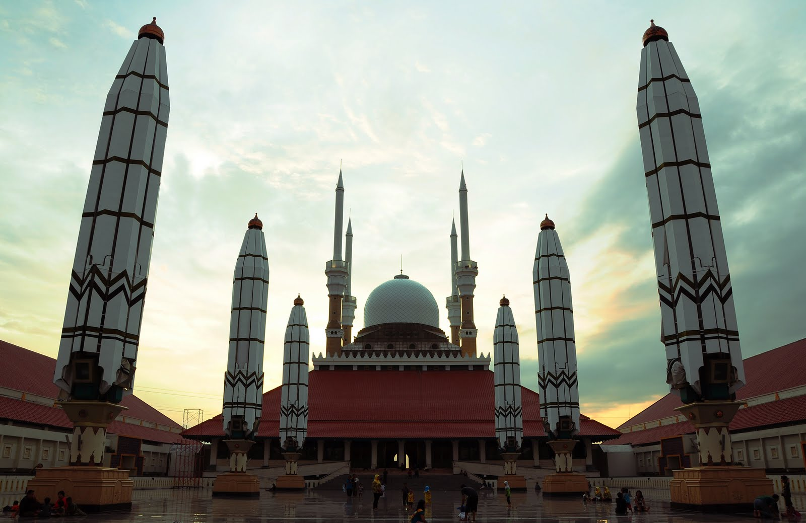

Kota Semarang memiliki sejarah yang panjang dan bervariasi.
Sebelum menjadi kota, area ini merupakan sebuah kawasan pertanian yang terletak di antara dua kota besar yaitu Salatiga dan Semarang.
Pada tahun 1850, kawasan ini telah berkembang menjadi sebuah kota dengan status kabupaten.
Pada tahun 1910, Kota Semarang menjadi kota provinsi.
Pada masa kolonialisme, Kota Semarang menjadi salah satu pusat perkembangan pendidikan di Indonesia.
Semarang didirikan pada abad ke-16 oleh Kesultanan Demak.
Sejak awal, Semarang telah menjadi pelabuhan penting di pantai utara Jawa, menghubungkan pulau ini dengan berbagai negara di Asia Tenggara.
Kota ini memainkan peran penting dalam perdagangan rempah-rempah dan kemudian menjadi pusat perdagangan kolonial Belanda.
Perjalanan di Semarang tak lengkap tanpa menapaki jejak sejarahnya yang terukir abadi.
Lawang Sewu, kompleks perkantoran bersejarah peninggalan Belanda dengan arsitektur megah, siap membawa Anda kembali ke masa lampau.
Jelajahi Kota Lama Semarang, kawasan bersejarah dengan bangunan-bangunan bergaya Eropa yang menawan, bagaikan menyusuri lorong waktu dan merasakan atmosfer kolonial yang masih terpancar.
Kunjungi Gereja Blenduk, gereja bersejarah dengan arsitektur unik yang memadukan gaya Eropa dan Jawa, dan rasakan perpaduan budaya yang harmonis.

Menjelajahi Semarak Kota Semarang: Perpaduan Pesona Geografis dan Atmosfer Metropolitan
Semarang, ibukota Jawa Tengah, bukan hanya terkenal dengan lumpia dan Kota Lamanya yang bersejarah, tetapi juga memiliki pesona geografis yang memukau.
Kota ini terletak di pesisir utara Jawa, dikelilingi oleh pegunungan dan laut, menawarkan panorama alam yang indah dan beragam.
Bagi pecinta alam, Semarang menawarkan petualangan di Pegunungan Ungaran, tempat Anda dapat mendaki gunung, menikmati udara segar, dan melihat panorama kota dari ketinggian.
Jika Anda mencari ketenangan, air terjun Curug Sidomukti dan Curug Sewu siap memanjakan mata Anda dengan keindahan alamnya yang asri.
Semarang bukan hanya tentang alam, tetapi juga tentang gemerlap kehidupan metropolitan.
Kota ini menawarkan berbagai pilihan wisata modern, seperti mal-mal besar, taman hiburan, dan bangunan-bangunan bersejarah yang telah direnovasi menjadi tempat wisata kekinian.
Semarang, ibukota Jawa Tengah yang terkenal dengan sebutan Kota Kendhi, menyimpan sejuta pesona wisata yang mampu membuat travelers terpukau. Dari warisan bangunan bersejarah, kuliner khas, hingga destinasi alam yang menakjubkan.
Semarang memiliki segalanya untuk memuaskan hasrat petualangan Anda. Mempunyai beragam destinasi wisata yang menarik.
Bagi para penikmat arsitektur, Kawasan Kota Lama adalah surga tersembunyi yang wajib dikunjungi.
Di sini, Anda dapat menjelajahi bangunan-bangunan tua peninggalan kolonial Belanda yang memesona, seperti Gereja Blenduk, Lawang Sewu, dan Oude Kring Vrienden.
Atmosfer masa lalu yang kental terasa di setiap sudut kawasan ini, seolah mengajak Anda untuk menyelami sejarah yang terkubur.
Kota Lama Semarang

Kawasan kota ini terletak di pesisir utara Jawa.
Kota Lama Semarang, bagaikan sebuah museum raksasa yang menyimpan jejak sejarah panjang dan keindahan arsitektur yang memukau. Dikenal sebagai "Little Netherland".
Kawasan ini merupakan saksi bisu kejayaan Semarang di masa lampau, ketika kota ini menjadi pusat perdagangan penting di Hindia Belanda.
Masuki gerbang Kota Lama dan rasakan atmosfer kolonial yang masih terasa kental. Bangunan-bangunan bersejarah dengan arsitektur khas Belanda berjajar rapi di sepanjang jalan. Lawang Sewu, kompleks perkantoran peninggalan Belanda dengan arsitektur megah, menjadi landmark ikonik Kota Lama. Jelajahi Gereja Blenduk, gereja bersejarah dengan arsitektur unik yang memadukan gaya Eropa dan Jawa.
Kunjungi Museum Kota Lama Semarang untuk mempelajari sejarah dan budaya kota ini secara lebih mendalam.
Lawang Sewu

Lawang Sewu, sebuah kompleks perkantoran bersejarah di Semarang, Jawa Tengah, bagaikan raksasa putih yang menjulang tinggi, menyimpan jejak sejarah panjang dan keindahan arsitektur yang memukau.
Dikenal sebagai "Seribu Pintu".
Lawang Sewu menjadi landmark ikonik kota Semarang dan saksi bisu kejayaan Hindia Belanda di masa lampau.
Lawang Sewu terkenal dengan arsitekturnya yang unik dan megah. Bangunan ini memiliki 1.000 pintu, sesuai namanya, yang terbuat dari kayu jati berkualitas tinggi.
Detail arsitekturnya sangat rumit dan indah, dengan ukiran-ukiran yang menawan dan jendela-jendela besar yang mencahayai ruangan.
Masjid Agung Jawa Tengah

Masjid Agung Jawa Tengah, yang terletak di Semarang, merupakan salah satu masjid terbesar dan termegah di Indonesia.
Masjid ini bukan hanya menjadi pusat spiritual bagi umat muslim di Jawa Tengah, tetapi juga menjadi landmark ikonik kota Semarang dan objek wisata religi yang menarik bagi wisatawan dari berbagai daerah.
Masjid Agung Jawa Tengah dibangun dengan arsitektur yang memadukan berbagai gaya, seperti Jawa, Islam, dan Eropa. Kubah masjid yang berwarna emas menjadi ciri khasnya dan terlihat mencolok dari kejauhan.
Interior masjid dihiasi dengan ukiran-ukiran yang rumit dan indah, serta kaligrafi Arab yang menghiasi dinding dan mimbar.
Masjid Agung Jawa Tengah bukan hanya tempat ibadah, tetapi juga objek wisata religi yang menarik bagi wisatawan dari berbagai daerah. Keindahan arsitekturnya yang megah dan suasana spiritual yang kental menjadi daya tarik utama bagi para pengunjung.
Pengunjung dapat menjelajahi berbagai ruangan di masjid, seperti ruang salat utama, museum, dan menara masjid. Di museum, pengunjung dapat mempelajari sejarah Islam di Jawa Tengah dan melihat berbagai koleksi benda-benda bersejarah.
Dari menara masjid, pengunjung dapat menikmati pemandangan kota Semarang yang indah.